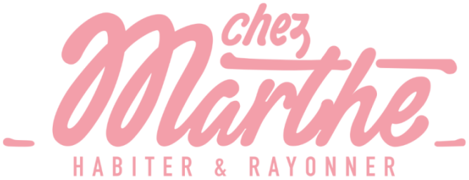
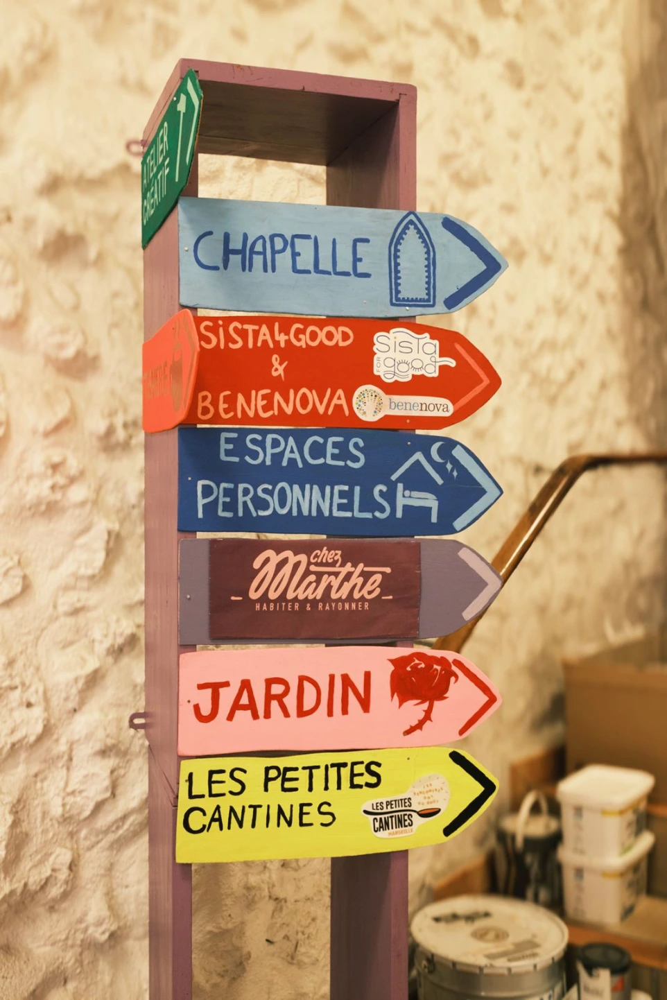
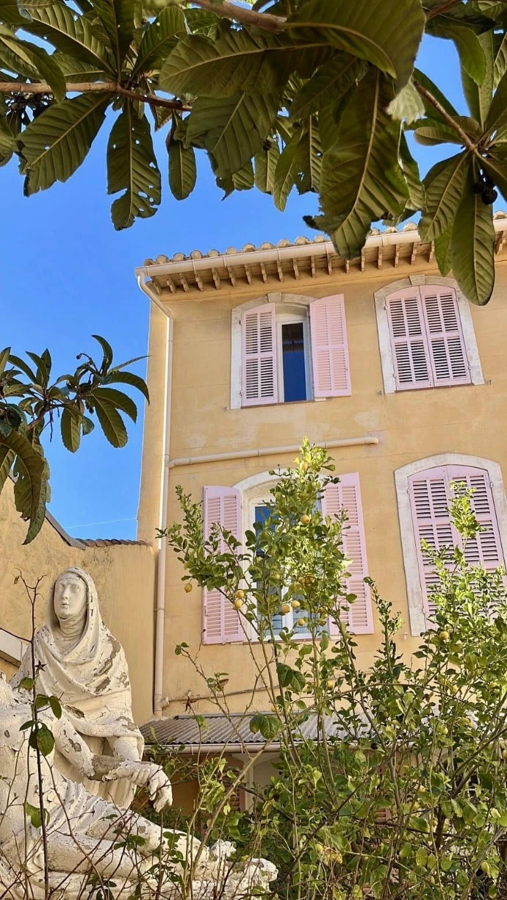
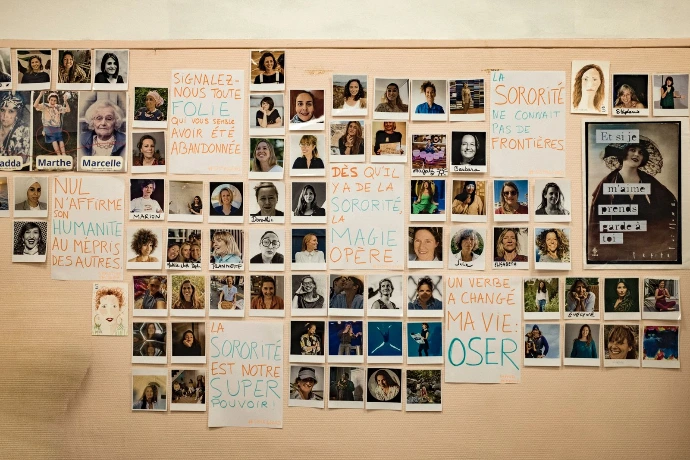
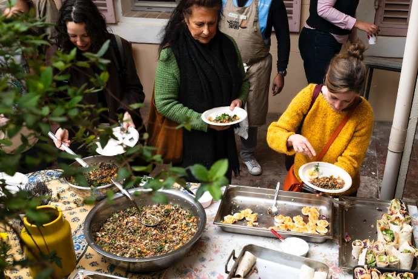
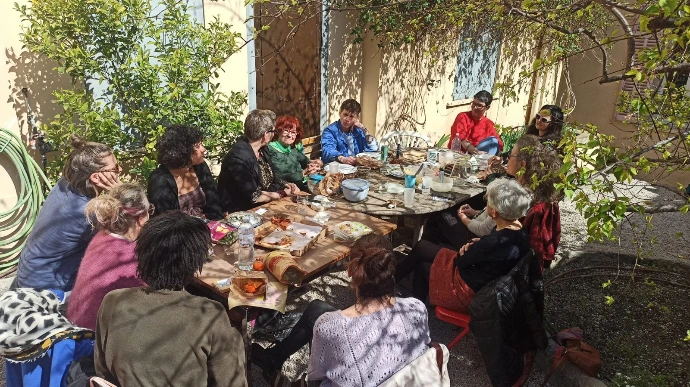

Véronique
Présidente
[Une ou deux phrases de présentation]

Soutenez un lieu tremplin pour les femmes, au cœur de Marseille, Nice, Avignon, Paris, Angers ou La Ciotat
Louer un espaceLA PLATEFORME
NOTRE PREMIER LIEU

Un ancien couvent de 1 500 m² dans le quartier des Réformés : trois bâtiments, une chapelle néogothique et un jardin, réveillés pour devenir la première Maison Tremplin.




NOTRE ÉQUIPE
Présidente
[Une ou deux phrases de présentation]
[Rôle]
[Une ou deux phrases de présentation]
[Rôle]
[Une ou deux phrases de présentation]
NOS ÉVÈNEMENTS
Toute la programmation et les inscriptions sur notre Instagram.
LOUER UN ESPACE
Dites-nous ce que vous imaginez : l’activité, la date, le nombre de personnes. Pour l’Atelier, proposez l’atelier gratuit que vous animeriez en échange.
Écrire à l’équipeou directement : contact.chezmarthe@gmail.com
ILS FONT VIVRE LE LIEU
REJOINDRE LE MOUVEMENT
Faites un don, adhérez à l’association ou rejoignez la communauté : chaque soutien fait vivre Chez Marthe.
CONTACT
Une question, une idée, l’envie de vous impliquer ? Écrivez-nous : nous répondons généralement sous 1 à 2 jours ouvrables.
Siège social : Maison des Associations, 93 La Canebière, 13001 Marseille
Chez Marthe, association loi 1901
Siège social : Maison des Associations, 93 La Canebière, 13001 Marseille
N° SIRET : 100 396 464 00016
E-mail : contact.chezmarthe@gmail.com
Directrice de la publication : Véronique Eyraud, présidente
Cette page est hébergée par Vercel Inc., 440 N Barranca Ave #4133, Covina, CA 91723, États-Unis.
Photographies : Céline Ravier. Conception : l’équipe bénévole du hackathon AIM 2026, pour Chez Marthe.
Les textes, photographies, logos et éléments graphiques de ce site appartiennent à Chez Marthe ou à leurs auteurs. Toute reproduction sans autorisation préalable est interdite.
Cette page ne collecte aucune donnée personnelle et ne dépose aucun cookie : pas de formulaire, pas de publicité, pas de mesure d’audience.
Les dons et adhésions passent par HelloAsso, le groupe « Les amies de Chez Marthe » par WhatsApp, et les e-mails par votre propre messagerie : ces services appliquent leur propre politique de confidentialité.
Pour toute question sur vos données : contact.chezmarthe@gmail.com. Vous pouvez aussi saisir la CNIL (cnil.fr).